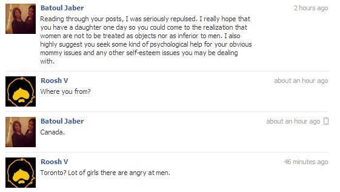
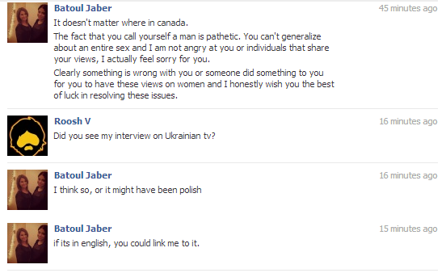
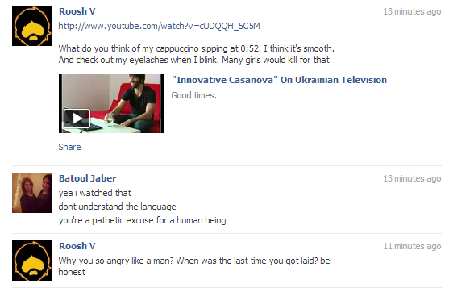
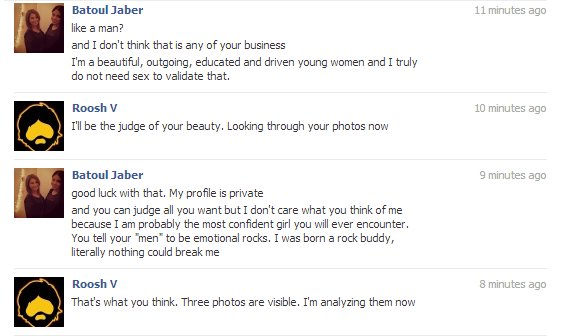
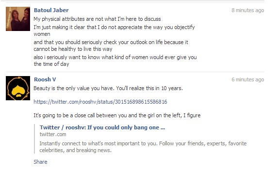
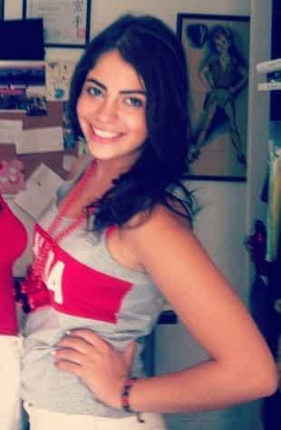
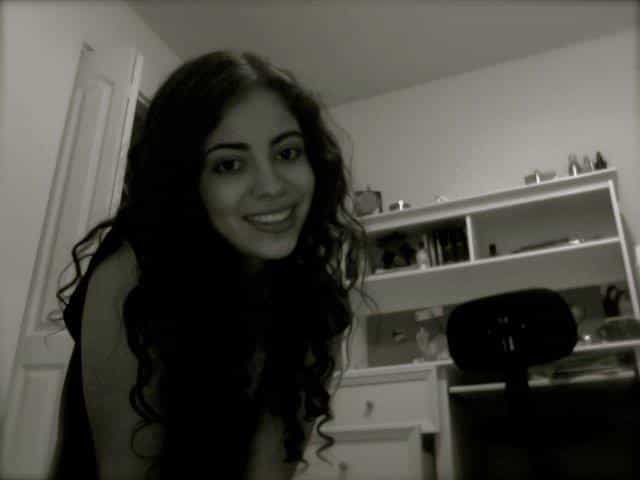
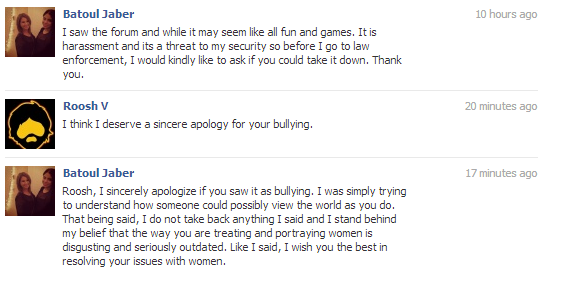

Daryush "Roosh" Valizadeh created ROK in October 2012. You can visit his blog at RooshV.com or follow him on Twitter and Facebook.


A couple weeks ago I highlighted the case of Paige Gorsak, a Canadian girl who has fallen by the wayside to stump for her feminist masters. With just a little bit of effort into her appearance and a sound diet, I argued, she could easily be an attractive woman who has no trouble finding a man willing to provide for her.
Today I share another case from Canada that is even more tragic. A bonafide cutie has corrupted her mind and soul to such a degree with feminist thought that she is more masculine and angry than yours truly. She attacked me on Facebook, unprovoked, and my attempts at a pleasant chat did nothing to tame her unbridled rage. Here is the conversation we had:






This was the tweet I sent her, linking to a photo on Facebook of her and her friends:
If you could only bang one of these girls, which would it be? (pic) ow.ly/hFfNf
— Roosh (@rooshv) February 13, 2013
I found it humorous that this independent, strong, outgoing, educated, driven, beautiful girl, with the endurance of a rock that can never be broken, immediately started threatening me after a single tweet. I posted the story on the forum, where we tried to look inside her motives, needs, and most importantly, her appearance. As you can see from these two photos, she is not an unattractive girl:


There are a lot of good comments in the thread, but this one stands out:
It’s like she had a little handbook of feminism next to her when she was writing that.
Book: “First tell him you feel sorry for him”
Girl: “‘I…feel…sorry…for…you’. Okay, what’s next?”
Book: “Once you’re done with that, you’ve made him feel smaller. Better kick him while he’s down. Tell him he has mother issues.”
G: “Hey, yeah! Great idea! *type type type* That’ll get him……..WAIT! What’s this?! He didn’t attack back?! Fuck, he called me out on my looks! Now what?!”
Book: “Proceed to chapter 478”.
G: “Okay, phew. They have a chapter for this. *blows dust off*
Let’s see…ah! Tell him his outlook on life is shitty and he is a creep and that women clearly don’t give him any time at all.
Hmm..but I suppose his cappuccino sipping is quite smooth, and he does have quite nice fluttery eyelashs…hmmm
NO! Remember the book!”
Book: “Remember girl, you are a rock, an emotional rock. You can’t be beaten”
G: “YEAH! Fuck you Roosh! Not even the hundred mile an hour winds at the top of Mount Kilimanjaro could rock this rock! *type type type*”
Roosh: “I’m throwing your meat to my wolves to see who they want the most”
G: “Noooo! I’m telling! Daddy!!!! I’m gonna be a lawyer dammit!!!!”
Along with this:
“I’m reporting you.”
It doesn’t occur to her that she’ll be reporting you to the MEN she needs to enforce rules that were made by the MEN made who made Twitter to begin with.
She just undid her own point about being strong as a rock with that statement. Feminists are only as strong as men they can get to help them.
Also, I’m tired of the “personal as political” meme they keep throwing out: “I hope you have a daughter who…” “What if it was you mother?!” Blah blah blah. People DID objectify my (formerly MILF) mother, and so fucking what? And if I had a daughter, I’d want guys to think she was hot.
What is the opposite of all that? You’d want to women in your life to be sexless little worker bees, slaving away all day to make someone else rich?
One final attempt to make right was met with a fake apology:

This troll job reinforces the idea that a feminist is nothing—absolutely nothing—without the power of men behind her. The police officers who take away husbands for “domestic abuse” are men. The judges who give onerous rulings against dads are men. The publishers who publish feminist talking points on major media outlets are men. The lawmakers who write one-sided marriage laws are men. The university chancellors who allow women’s studies classes to misinform students on their campuses are men. They all enable girls like our misguided cupcake above to stupidly attack men such as myself, and by responding in kind, we only attack the symptom of the disease, not the raging, pus-riddled infection inside. The reason that—in spite of the ongoing war against feminism—they continue to have great power is simply because the men behind them remain untouched.